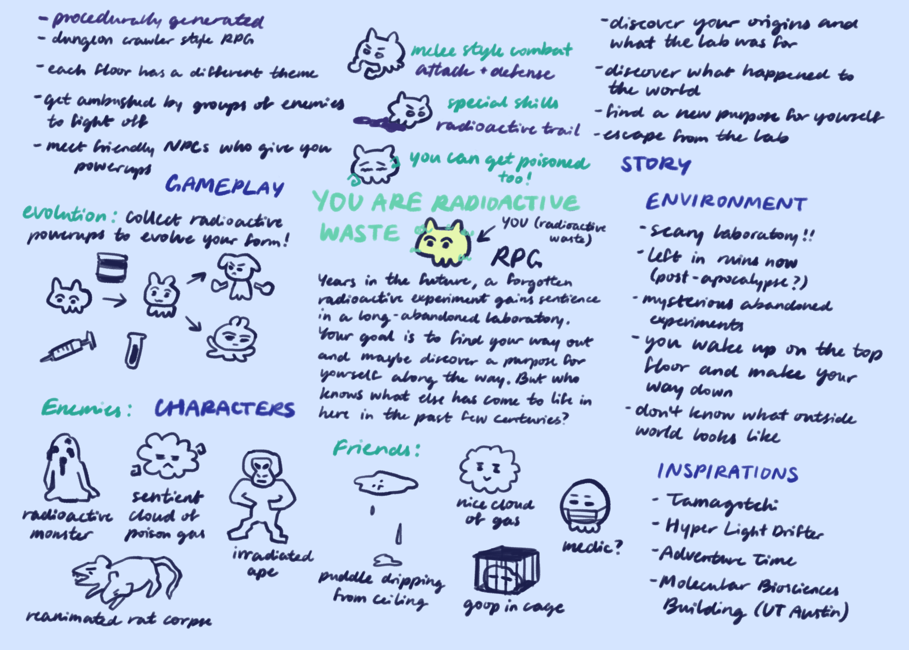
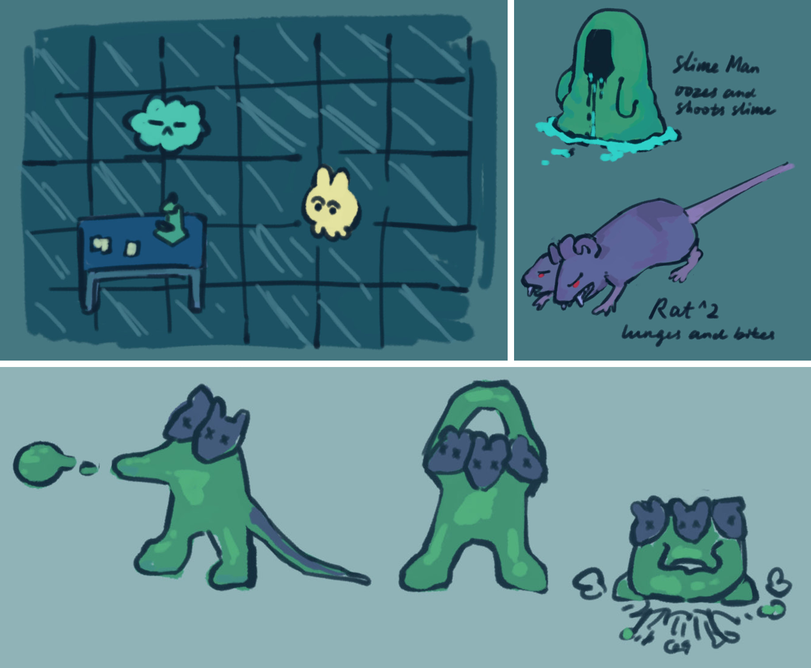
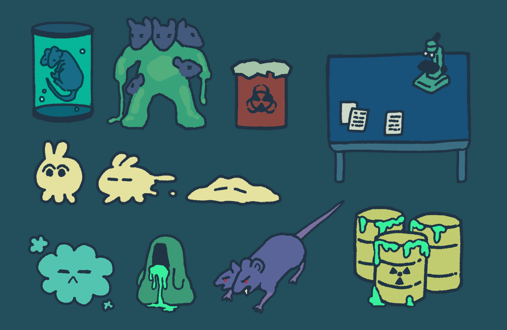

Radioactive Waste Training
October – December 2023
Interaction design, graphical user interface, sprite art and animation, working with developers

I designed and developed this game with a team of four in about two months for the UT class Elements of Game Development, working in the Godot 4 engine. It is a dungeon crawler style role-playing game with procedurally generated maps, where the aim is to escape from a dangerous abandoned laboratory.
What I did:
Why:
Game design is one of best ways to explore the potential of human-computer interaction. Through this project, I learned how to match user expectations in interactive digital experiences and build interfaces that are easy to use while also embodying brand identity.
First Concept

This was the original concept that I pitched to my group. My ideas were vast, and very many of them did not make it into the final game! However, many of the most baseline concepts do show through in the final product, including the basic gameplay mechanics, the setting and environment, and character designs for the player and enemies.
More Concept Sketches and Character Art


In the next stage, as my teammates worked on generating the map and the basic characters in Godot, I started fleshing out my design concepts and began thinking about how to translate my ideas into a functional game.
Designing Interactions and the HUD

Now that my design ideas were more solidified, I had to figure out how these would translate into proper game interactions. The most important part of this step was effectively designing and implementing character animations that were properly visually responsive to user input.
I also started thinking more about the HUD in this stage. Similarly to character animations, I had to figure out how best to visually convey changes in the game state that occurred in response to user actions. One of the biggest challenges I faced implementing the HUD was matching the visual style of the game and following video game conventions while also making information clear and easy to recognize.
I also started thinking more about the HUD in this stage. Similarly to character animations, I had to figure out how best to visually convey changes in the game state that occurred in response to user actions. One of the biggest challenges I faced implementing the HUD was matching the visual style of the game and following video game conventions while also making information clear and easy to recognize.
Working with Developers
I worked closely with the developers throughout the design process. I had to learn how to adapt my workflow to what they needed, often rearranging my order of tasks, as the development flow was fast-paced enough that ideation and development were often occurring concurrently. I also had to adapt many of my design ideas to fit the limitations of what the developers could manage to implement within the game engine.
User Testing

We conducted several phases of user testing throughout the development process. During these sessions, we observed users as they attempted to play our game, taking note of game difficulty, effectiveness of visual communication, and any other issues that may have arisen. Afterwards, we presented the users with a series of post-test questions and asked them for suggestions on what would make the game more enjoyable for them. After each round of user testing, we went back and determined how to incorporate what we learned into the next phase of development.
Final Takeaways
As this was the first major interaction design project that I ever undertook, there was a whole lot that I learned, as well as things that I would do very differently if I could go back now!
What I learned:
Play the game here!